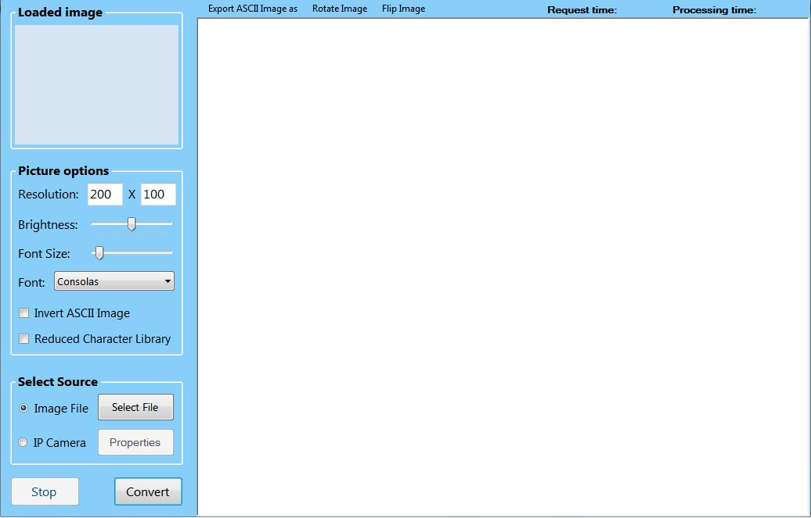
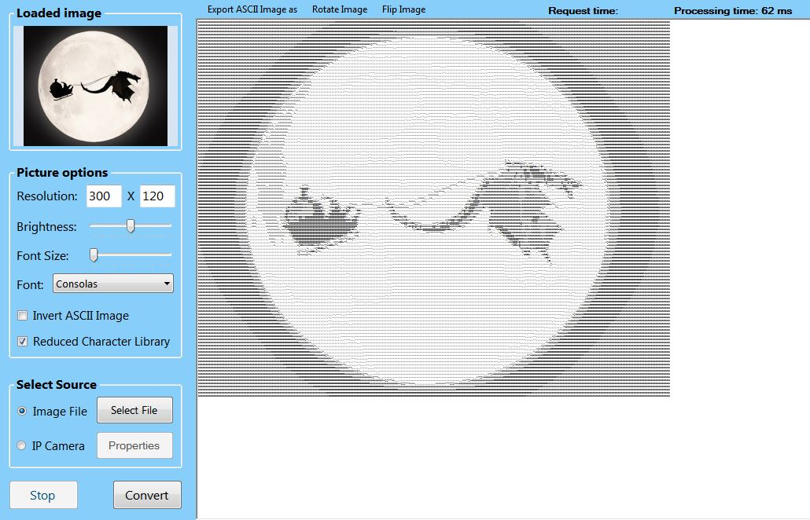
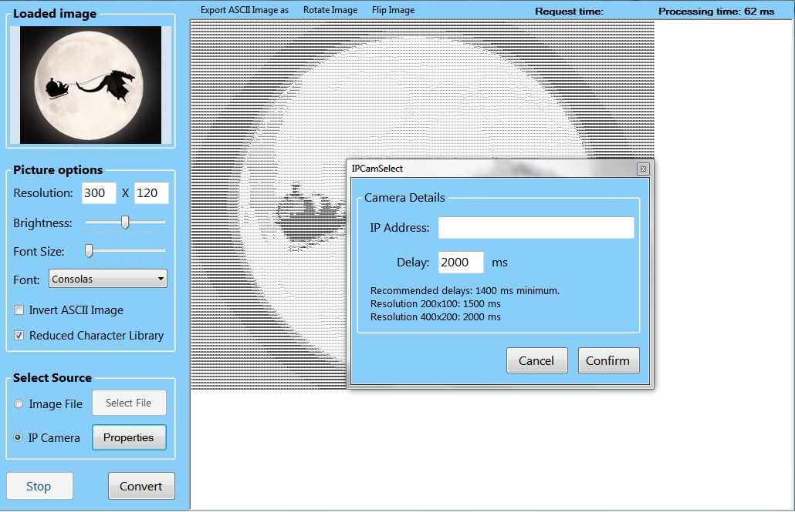
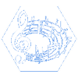
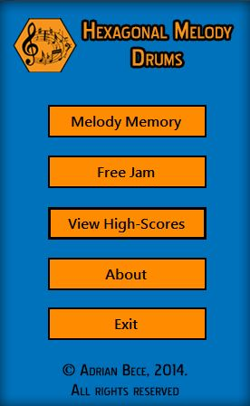
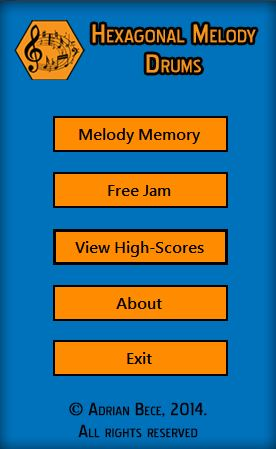

| Image To ASCII |
| "Image To ASCII" je program koji može pretvoriti slike raznih formata (.jpg,.png,.gif...) u ispis pomoću ASCII znakova. Ispis znakova se daljnje može spremiti kao tekstualna datoteka (.txt), HTML datoteka (.HTML) ili kao slika koja prikazuje znakove (.jpg). Program sadrži različite mogućnosti za uređivanje i pretvorbu slika - posvjetljenje ili potamnjenje slika, rotacija slike, invertiranje slike, smanjeni skup znakova za pretvorbu, itd. Ulaznu sliku je moguće učitati iz datoteke ili preko IP webkamere ili Android mobitela pomoću aplikacije za IP webkameru. Pisan je u programskom jeziku C# pomoću Visual Studio 2012 programskog paketa. | |
|    |
| Hexagonal Melody - Drums |
|  |
"Hexagonal Melody - Drums" je jednostavna glazbena igra sa bubnjevima koja se sastoji od dva dijela:
|

 

|
| Omnivision IP Camera Manager |
| "Omnivision IP Camera Manager" služi za unos, izmjenu i pohranu podataka o različitim IP kamerama. Program je namijenjen za nadzor i upravljanje višestrukim IP kamerama. Moguće je pohraniti slike, snimiti video i pratiti više kamera istovremeno. Pisan je u programskom jeziku C# pomoću Visual Studio 2012 programskog paketa. Koristi AForge.NET multimedijski dodatak. | |


|
| Schedule Generator (Frontend/UI design) |
| Izrađeno korisničko sučelje i Frontend dio za program "Schedule Generator" prijavljen na natjecanje Osijek Software City-a, Software Startup Academy 2014. godine. Pisano u programskom jeziku Java koristeći programski paket Eclipse. | |


|
| Projekti na GitHub bazi |
| Na ovoj GitHub stranici mogu se vidjeti izvorni kodovi i ostali izrađeni projekti pisani u programskim jezicima C, C++, C#, Java, itd. Link na stranicu: Adrian Bece GitHub | |

|